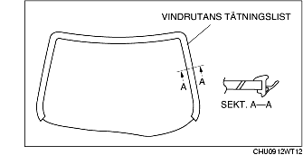
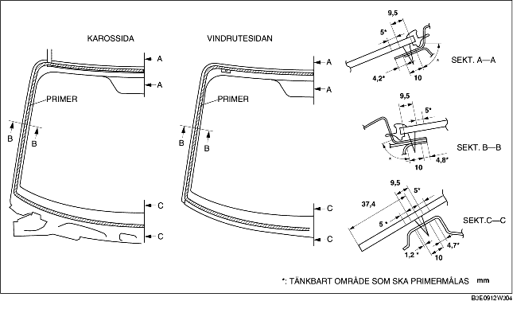

MONTERING AV VINDRUTA
B3E091263900W02
-
Varni ng
-
• Användandet av en kniv med bara händer kan leda till skador. Använd alltid skyddshandskar när du använder en kniv.
-
Försiktigt
-
• Det kan vara svårt att montera vindrutan korrekt om tätningsmedlet är sprucket eller glaset tryckts ut av lufttryck när en dörr öppnas/stängs med alla rutor stängda. Lämna alla rutor öppna tills dess att vindrutan monterats klart.
1. Skär bort den gamla tätningen med en rakbladskniv så att ca 1-2 mm {0,04-0,07 tum} tjockt tätningsmedel finns kvar längs ramens omkrets.
2. Om allt tätningsmedel försvunnit på något ställe, avfetta och sätt på lite primer och låt torka under cirka 30 minuter. Lägg sedan på ett cirka2 mm {0,08 tum} tjockt lager tätningsmedel.
3. Rengör och avfetta en c:a 50 mm {1,97 tum}bred remsa runt om vindrutans kant och på karossens fastsättningsyta.
4. Om du monterar en återanvänd ruta, utför följande:
-
(1) Fäst stiften på placeringsmärkena som sattes ut under demonteringen.
-
(2) Montera vindrutans tätningslist.

5. Använd endast glasprimer på glaset och karossprimer på karossen och tätningslisten, och låt det sedan torka i c:a 30 min .
-
Försiktigt
-
• Håll området fritt från smuts och fett, och vidrör inte ytan. I annat fall kanske primern inte fäster ordentligt vid glasytan och karossytan, och detta kan då orsaka läckage.

6. Applicera tätningsmedel på glasets fastsättningsyta enligt bilden.
7. För in placeringsstiften i karossen och montera vindrutan.
8. Tryck på vindrutestiften för att fästa klämmorna i karossen.
9. Tryck runt hela glasets omkrets så att tätningslistens gap ligger inom angivna värden.
10. Montera följande delar:
-
(1) Kartbelysning (Se DEMONTERING/MONTERING AV KARTBELYSNINGEN.)
-
(2) A-stolpens beklädnad (Se DEMONTERING/MONTERING AV A-STOLPENS BEKLÄDNAD.)
-
(3) Solskydd (Se DEMONTERING/MONTERING AV SOLSKYDD)
-
(4) Regngivare (För fordon med automatiska torkarblad) (Se DEMONTERING/MONTERING AV REGNGIVARE.)
-
(5) Backspegel (Se DEMONTERING/MONTERING AV BACKSPEGEL.)
-
(6) Torpedplåtens grill (Se DEMONTERING/MONTERING AV TORPEDPLÅTENS GRILL.)
-
(7) Vindrutetorkarens arm och blad (Se DEMONTERING/MONTERING AV VINDRUTETORKARNAS ARM OCH TORKARBLAD.)
11. Låt tätningsmedlet härda ordentligt.
-
Härdningstid för tätningsmedlet: 24 tim.